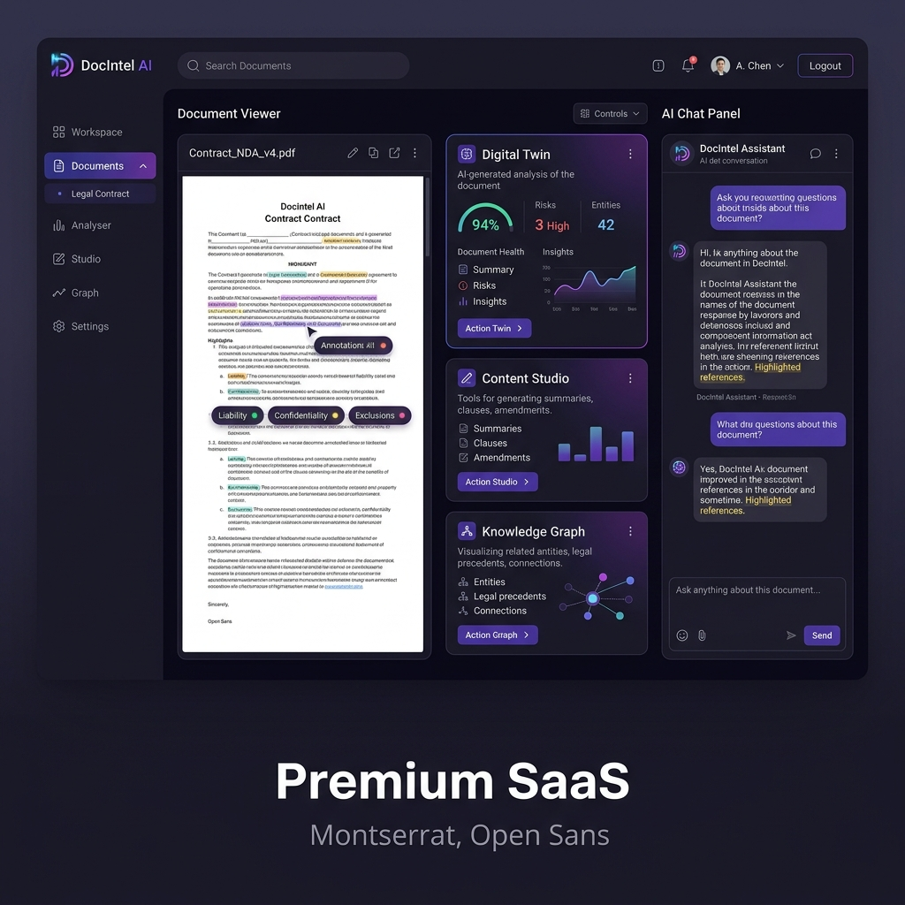

An enterprise-ready, local-first intelligence workspace. Mock interviews, content creation, digital twin simulation, and knowledge graphs — all powered by your documents under complete privacy.

Beyond standard search and retrieval. DocIntel AI processes PDFs to extract deep insights, generate custom workflows, and build interactive training modules.
Switch seamlessly between local Ollama instances for complete data privacy and commercial APIs like OpenAI, Claude, and Gemini.
Simulate first-person chat sessions with the author or subject of your documents to interrogate their arguments directly.
A mock recruiter runs interactive interviews based on the document, grading your responses on depth, clarity, and communication rubrics.
Instantly draft LinkedIn posts, Twitter threads, slide presentations, blog posts, and cover letters using the document context.
Interactive, draggable relationship maps display the connections, skills, and entities found within your loaded documents.
Analyze your resume against job specifications to extract match percentages, identify skill gaps, and generate learning roadmaps.
Toggle through the different operational modes of the DocIntel platform interface.
I have processed Resume_Sai_Shashank.pdf. Hybrid vector search and BM25 keyword matching are initialized. How can I help you extract insights from this profile today?
What is Sai's experience in cloud deployments and system architectures?
Based on the extracted profile, Sai has extensive experience in containerized applications and cloud architecture:
"The candidate shows a good architectural grip. Excellent mention of abstract classes and polymorphism, indicating strong OOP background."
🚀 I am thrilled to share the release of DocIntel AI - an enterprise-ready workspace designed to unlock document-driven insight!
Standard PDFs shouldn't just be static files. They hold valuable logic. With DocIntel, you can:
🔹 Switch between local Ollama instances (for total privacy) & commercial API endpoints.
🔹 Convert articles into interactive Recruiters for mock interviews.
🔹 Interact with authors via Digital Twin personas.
Open source and ready for deployment. Check the link in the comments! 👇
#AI #MLOps #DocumentIntelligence #OpenSource
A secure pipeline designed to respect data sovereignty while extracting maximal logical output.
Upload your PDF document. The system uses pdfplumber to extract structured texts and tables locally, bypassing external SaaS storage.
Text is split into 1000-character chunks and loaded into ChromaDB (vector) and BM25 (keyword matching) for highly precise query retrieval.
A local Cross-Encoder reranker scores retrieved passages, making sure only the most relevant document facts are passed to the model provider.
Responses undergo an automated groundiness evaluation to avoid hallucinations, delivering high-confidence insight to your selected interface.
Run locally in minutes, or orchestrate multi-container instances on GCP, Render, or AWS.
services:
docintel:
build: .
ports:
- "8501:8501"
environment:
- OLLAMA_HOST=http://host.docker.internal:11434
extra_hosts:
- "host.docker.internal:host-gateway"
restart: unless-stopped